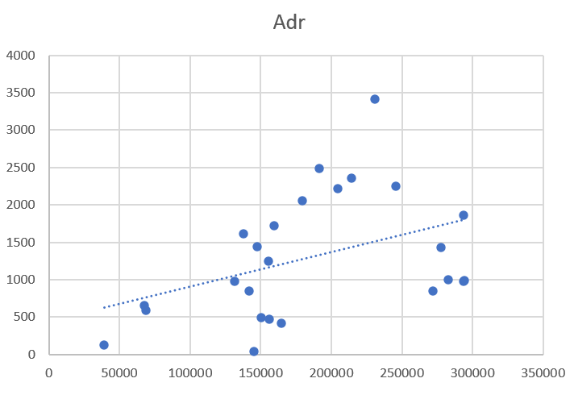
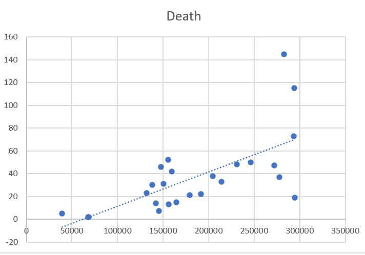
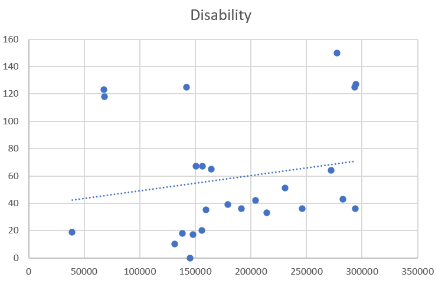
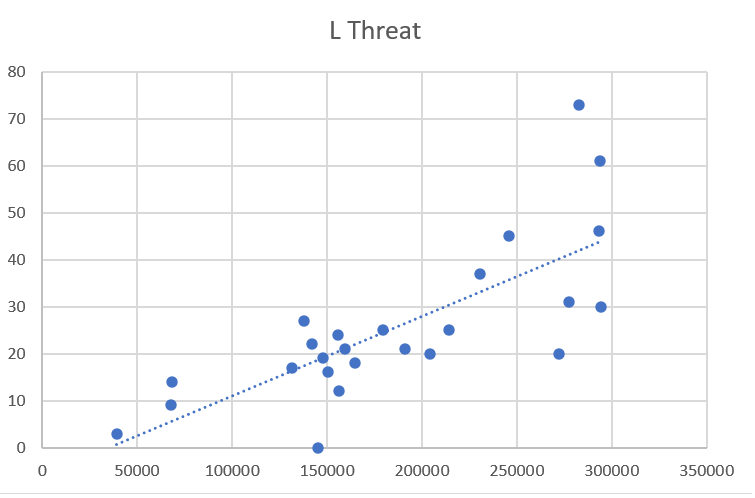

Lot Sizes
home | Booster Warnings by Month | Moderna | Pfizer | Janssen | Moderna (outside USA) | Pfizer (outside USA) | Janssen (outside USA) | Severe | Symptom | Treatment | Children | Clusters | All or Nothing | Time till onset | Gender | Geography | States | Causality | Japan | Sweden | Video Library | Case Reports | Lot Sizes | Lot Expiry Dates | Whistle Blowers | Data Cleaning | Background | Download Source Code | Donate
If this site is slow loading that's because over 1 million people are accessing it right now. Please use auxillary site HowBadisMyBatch.com which has been set up to cope with this overload. Thankyou.
As Pfizer release more documents, information is coming to light regarding Lot sizes.
We now have the sizes for 33 Pfizer lots. We can now carry out a correlation study to see if lot size correlates with adverse reactions for each lot.
It should be stressed that these 33 Pfizer batches are only a small sample of the total number of batches - so there may be other batches showing even greater variation from the mean.
ADRs
It is found that some batches are associated with 3x or 4x the ADRs compared to other batches of the same size.
Deaths
It is found that some batches are associated with 3x or 4x the deaths compared to other batches of the same size.
Disabilities
It is found that some batches are associated with 3x or 4x the disabilities compared to other batches of the same size.
Life Threatening Illnesses
It is found that some batches are associated with 3x or 4x the life threatening illnesses compared to other batches of the same size.
I will update this page as more information is received
Click to download pdfs and spreadsheets